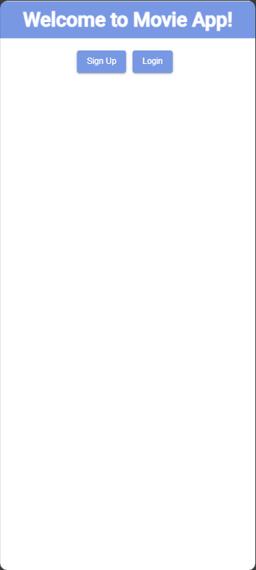
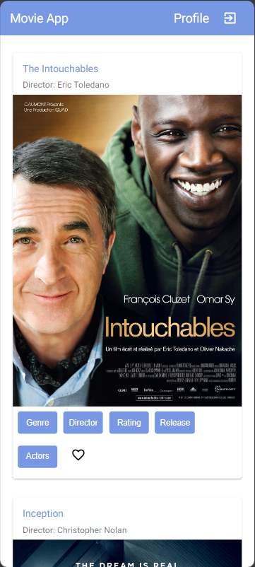
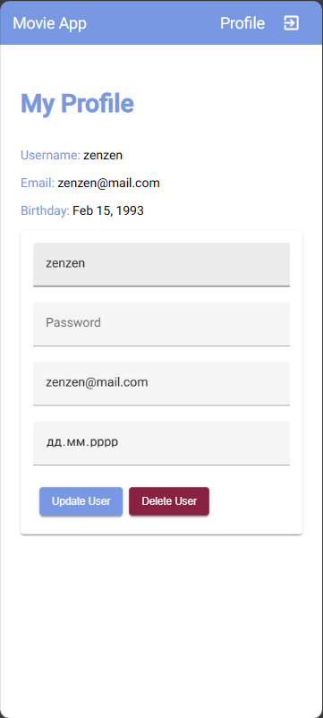

Click on the image and hold to zoom in.

MyFlix-Angular-App is a web app, developed using the MEAN stack, that provides users with information about movies. Users can access information about movies, directors, and genres. Users can create an account, update their information, and create a list of favorite movies.
MyFlix-Angular-App was a required project I developed as part of my full-stack immersion course at CareerFoundry to demonstrate my mastery of full-stack web development using JavaScript. Additionally, I practiced Agile project management, feedback providing, and documentation generation skills.
The project aimed to develop a fully-functioning full-stack app that I could add to my professional portfolio. The problem I wanted to solve was to build the complete full-stack web application by connecting the previously designed server-side and the client-side for the application from scratch.
The work on the project started with creating the Kanban board and filling it with the project requirements and user stories. When a project task was completed, it was moved to the "Done" section. As well, I generated detailed documentation with Typedoc as per the project's requirements.
I developed a RESTful API using Node.js and Express that interacts with a non-relational database (MongoDB). The API employs common HTTP methods like GET, PUT, POST, and DELETE. To retrieve data from and store data in the database, CRUD methods are used. The API provides movie, TV series, and anime information in JSON format.
→ View EndpointsI used Postman to test responses and requests to the API. I also made use of basic HTTP authentication and JWT authentication to provide for the authentication and authorization features.
I built the front-end interface for users to be able to interact with the logic and data from the API and the database. It is a single-page, responsive web application, developed with Angular and Material UI. It displays several interface views, including a main view (shows a list of all movies, a button to manage favorites, and buttons to view additional movie information), a login/signup view, and a profile view (where users can update their user data).
Click on the image and hold to zoom in.
  Almost 1.5 weeks (10 days)
The development of the myFlix app took much less time and effort as compared to the R3play React app since:
The difficulties I encountered happened at the end of the project and related more to the peculiarities of Angular and Github. One issue occurred when Github pages refused to deploy the app for a long time. The other one happened when the local changes to the codebase didn't display in the deployed app. To troubleshoot this, I reached out to my mentor and tutor and, during a pair programming session, we managed to fix the problems.
It was also a useful experience in debugging and troubleshooting, using git terminal commands, specifics of working with Angular, and pair programming sessions. I also added new skills to my arsenal, such as Typescript, Angular, Material UI, proper code commenting, collaboration, and others.
The myFlix app was the last full web application I developed in the Full-Stack web development course. When it was finished, I proceeded to enhance my portfolio.
Angular
Material UI
Javascript
CSS3
Documentation
Typedoc
Agile workflow
Kanban board
User stories
Collaboration
Contributing
Providing feedback
Teamwork
Responsive design
CSS3
HTML5
Ajax
Deploying a website
Role: Lead Developer
Tonny Ntambaazi: Creative Director
Nizar Triki: Software Engineering Manager